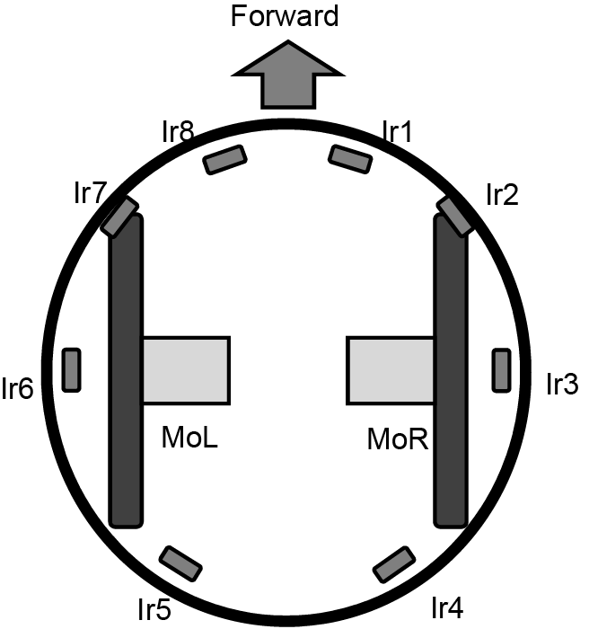
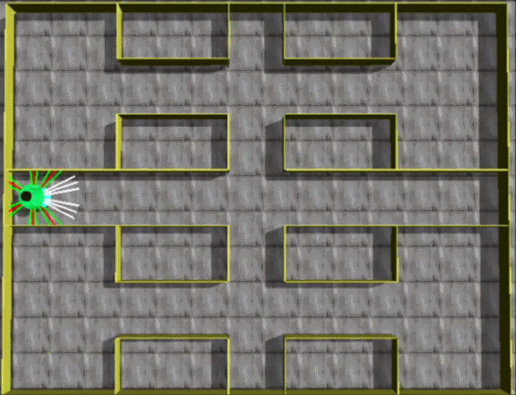

|
自律移動ロボットの行動設計最適化ベンチマーク問題
問題概要
自律移動ロボットは，自律性を重要視したロボット技術である。
状況や環境にうまく適応しながら作業できるような適応性の要素を備えた自律移動ロボットのコントローラ技術は，自動車のオートパイロット，工場内の荷物運搬ロボットの制御，自動掃除ロボットの巡回ルート構築などに応用可能で，その開発が強く求められている。
本問題では，オープンソースの物理計算エンジンであるOpen Dynamics Engine[1]を用いて開発した実際の車輪移動ロボットの特性を反映した3Dシミュレータを公開するとともに，自律移動ロボットのコントローラの設計手法を評価するためのベンチマーク問題を提供する。
公開するシミュレータでは，自律移動ロボットとして，図1に示す構造を持つe-puck[2][3]を想定する。シミュレータには，図2に示すような環境下での自律移動ロボットの行動設計問題が含まれている。シミュレータの設計（ロボット・環境のモデル化）と最適化問題の定式化の詳細については，文献[4][5]を参照されたい。

図1：自律移動ロボットの構造
（文献[5]から引用）
|

図2：計画行動の設計問題の環境
（文献[5]から引用）
|
ソースコード
P9.zip (C/C++) — 使用法は「readme.txt」を参照。
参考文献
| [1] |
R. Smith: "Open dynamics engine", http://http://www.ode.org/ (2007) |
| [2] |
F. Mondada and M. Bonani: "e-puck", http://www.e-puck.org/ (2015) |
| [3] |
F. Mondada, M. Bonani, X. Raemy, J. Pugh, C. Cianci, A. Klaptocz, S. Magnenat, J. Zufferey, D. Floreano, and A. Martinoli: "The e-puck, a robot designed for education in engineering", Proc. of the 9th Conference on Autonomous Robot Systems and Competitions, pp. 59–65 (2009) |
| [4] |
元木誠，岡本卓，飯間等，秋吉政徳：「自律移動ロボットのコントローラ設計のためのベンチマーク問題」, 電気学会 システム研究会 資料, ST-16-042 (2016) |
| [5] |
元木誠，岡本卓，飯間等，秋吉政徳：「自律移動ロボットの行動設計最適化ベンチマーク問題」, 平成29年 電気学会全国大会 講演論文集, 3-S10-5 (2017) |
更新履歴
- May 1st, 2017: 文献[5]に基づいたソースコードを公開。
|
|